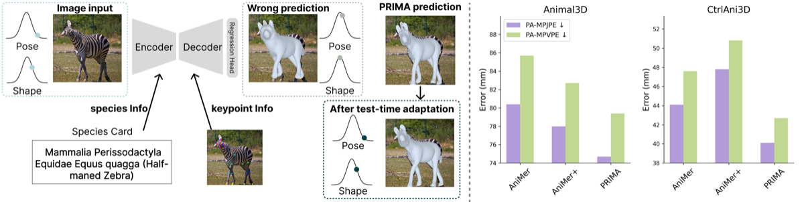
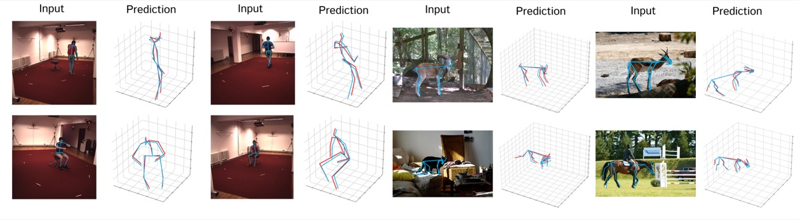
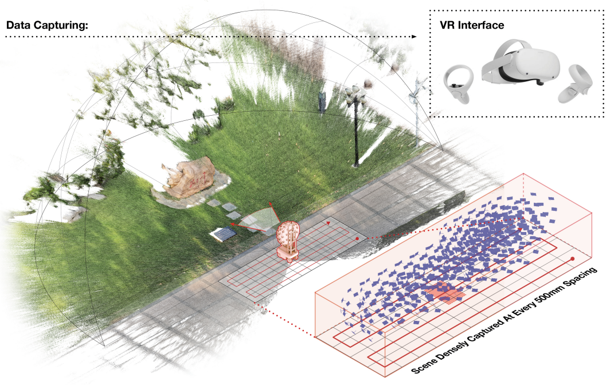
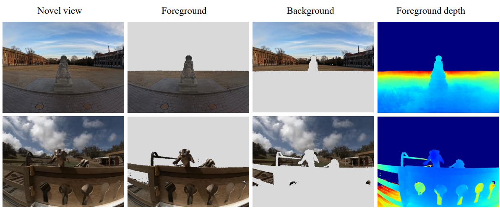
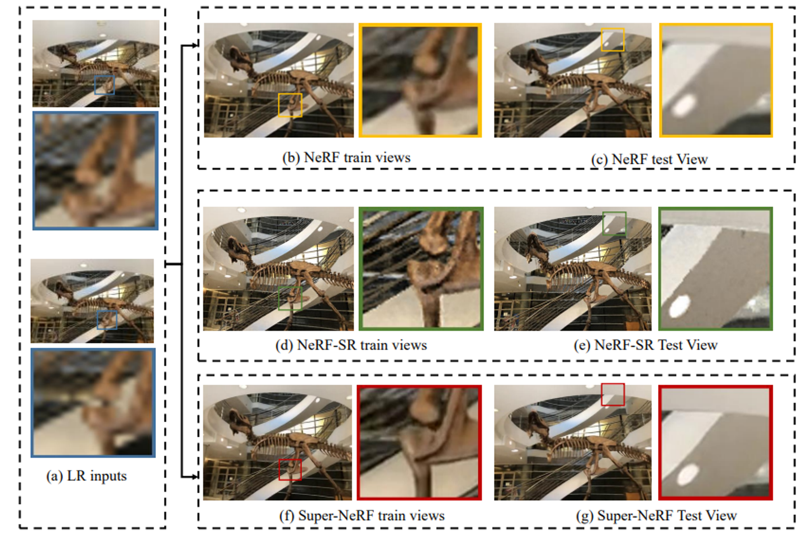
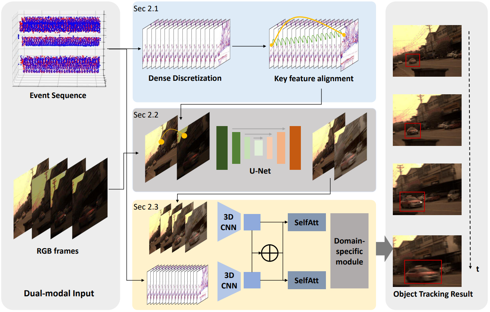

I am a third-year PhD student at M-Lab of Adaptive Intelligence, EPFL, Switzerland.
I got my Master's degree of Data Science from Tsinghua University, where I was supervised by Prof. Qionghai Dai.
My master’s thesis has focused on large-scale scene reconstruction and rendering and the corresponding applications in VR to improve the sense of immersion.
I am interested in 3D/4D reconstruction, particularly recovering shape and motion from partial observations like videos. Also, I am enthusiastic about fairness and transparency in AI to ensure inclusivity.
For any inquiries, feel free to reach out to me via mail!

@InProceedings{yu2026prima,
author = {Xiaohang Yu and Ti Wang and Mackenzie Mathis},
title = {PRIMA: Boosting Animal Mesh Recovery with Biological Priors and Test-Time Adaptation},
booktitle = {arXiv},
year = {2026},
}
@InProceedings{wang2026fmpose3d,
author = {Ti Wang and Xiaohang Yu and Mackenzie Mathis},
title = {FMPose3D: monocular 3D pose estimation via flow matching},
booktitle = {CVPR},
year = {2026},
}
@InProceedings{yu2026immersivespace,
author = {Xiaohang Yu and Zhengxian Yang and Shi Pan and Yuqi Han and Haoxiang Wang and Jun Zhang and Shi Yan and Borong Lin and Lei Yang and Lu Fang and Tao Yu},
title = {Toward Immersive Volumetric Space: Capture, Reconstruction, and Application},
booktitle = {TCSVT},
year = {2026},
}
@InProceedings{yu2023immersivenerf,
author = {Xiaohang Yu and Haoxiang Wang and Yuqi Han and Lei Yang and Tao Yu and Qionghai Dai},
title = {ImmersiveNeRF: Hybrid Radiance Fields for Unbounded Immersive Light Field Reconstruction},
booktitle = {TVCG},
year = {2024},
}
@InProceedings{han2023super,
author = {Yuqi Han and Tao Yu and Xiaohang Yu and Yuwang Wang and Qionghai Dai},
title = {Super-NeRF: View-consistent Detail Generation for NeRF super-resolution},
booktitle = {TVCG},
year = {2023},
}
@InProceedings{drones8010022,
author = {Yuqi Han and Xiaohang Yu and Heng Luan and Jinli Suo},
title = {Event-Assisted Object Tracking on High-Speed Drones in Harsh Illumination Environment},
booktitle = {Drones},
year = {2024},
}Teaching assistant at EPFL: